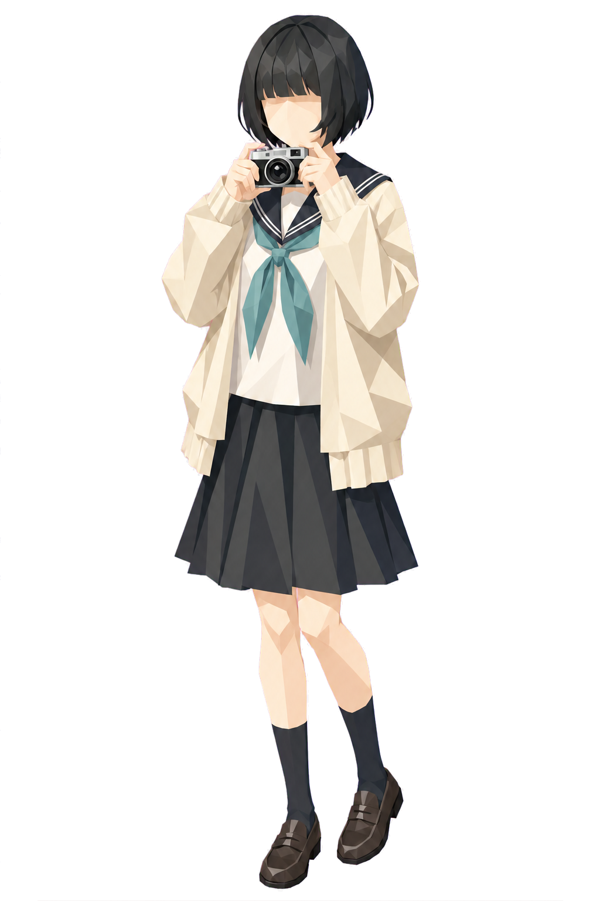

35 MM / NO. 05
THE WORLD, HELD STILL
A quiet
frame.
BEFORE THE SHUTTER
Some moments ask for nothing.
Only a little attention.

Preparing the next moment…
THE WORLD, HELD STILL
Some moments ask for nothing.
Only a little attention.

Preparing the next moment…